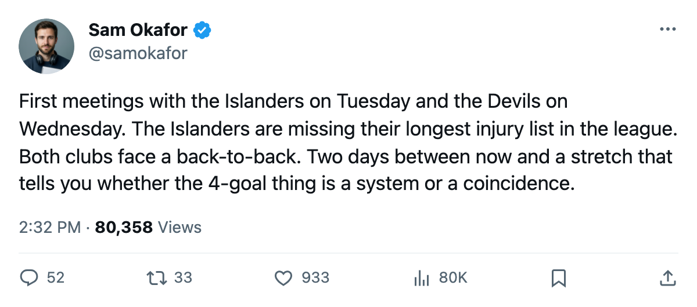

Week Ahead: The Islanders visit with 7 out, then New Jersey arrives off a back-to-back
Toronto opens Tuesday at a shorthanded New York club, then hosts the Devils Wednesday in the second half of a back-to-back for both teams.
 Sam OkaforLeafs beat reporter · Queen City Telegram
Sam OkaforLeafs beat reporter · Queen City Telegram Toronto Maple Leafs beat
Toronto Maple Leafs beat  Tampa Bay Lightning 4-3 on Saturday at the Air Canada Centre, on 25 shots against 23, to move to 38 points in 25 games and extend the lead in the Northeast to 7 over
Tampa Bay Lightning 4-3 on Saturday at the Air Canada Centre, on 25 shots against 23, to move to 38 points in 25 games and extend the lead in the Northeast to 7 over  Boston Bruins. Two days off, then Tuesday at
Boston Bruins. Two days off, then Tuesday at  New York Islanders and Wednesday against
New York Islanders and Wednesday against  New Jersey Devils, the first meeting with each this season.
New Jersey Devils, the first meeting with each this season.
The Islanders are missing bodies
New York Islanders has 7 players on the injured list, the most in the league. That's 3 defencemen, 2 left wingers, 1 right winger, and 1 centre unavailable for Tuesday's first meeting. New York is 12-8-3 through 24 games, 29 points, and sits 4-7 on the road.
| player | position | body part | expected back |
|---|---|---|---|
 Oleg Kvasha79 Oleg Kvasha79 | LW | foot | 2006-01-05 |
 Mariusz Czerkawski75 Mariusz Czerkawski75 | RW | elbow | 2005-12-07 |
 Radek Martinek72 Radek Martinek72 | D | elbow | 2005-12-21 |
| Justin Papineau72 | C | foot | 2005-12-12 |
 Stephane Robidas69 Stephane Robidas69 | D | hip | 2005-12-13 |
 Shawn Heins67 Shawn Heins67 | D | leg | 2005-12-18 |
 Pierre Dagenais66 Pierre Dagenais66 | LW | wrist | 2006-02-07 |
Czerkawski is the one to watch: his return date is December 7, the day after the Toronto game. He'll miss this one. Rick DiPietro79 is 9 spots above his base on the Bureau's Development Index, with 20 starts and a +9 form term.
Toronto Maple Leafs is 7-1 on the road this season. The Islanders are 4-7 at home and have won 3 straight.
New Jersey comes in on tired legs
The Devils visit Wednesday on the second night of a back-to-back. New Jersey Devils hosts  Pittsburgh Penguins on Tuesday before travelling to Toronto. New Jersey is 13-5-2 through 22 games, 32 points, 8-4 at home, 7-3 on the road. They dropped their most recent game 4-3 at
Pittsburgh Penguins on Tuesday before travelling to Toronto. New Jersey is 13-5-2 through 22 games, 32 points, 8-4 at home, 7-3 on the road. They dropped their most recent game 4-3 at  Philadelphia Flyers on December 2.
Philadelphia Flyers on December 2.
Toronto is also on the back end of a back-to-back, having played at New York Islanders the night before. Neither club gets a rest day between the two games.
 Roberto Luongo95 has started 9 games, Mikael Tellqvist73 8. Luongo's morale sits at 84, the lowest on the roster. Tellqvist's Index term is -5, the steepest fall among Toronto players.
Roberto Luongo95 has started 9 games, Mikael Tellqvist73 8. Luongo's morale sits at 84, the lowest on the roster. Tellqvist's Index term is -5, the steepest fall among Toronto players.
The rest of the week
Pittsburgh Penguins visits Saturday December 10.  Mikael Renberg76 plays at Toronto for the first time since changing sides in January, and
Mikael Renberg76 plays at Toronto for the first time since changing sides in January, and  Ramzi Abid80 will be in the building on Toronto's side for the first time since that same trade. Then Philadelphia Flyers on the road Monday December 12 and
Ramzi Abid80 will be in the building on Toronto's side for the first time since that same trade. Then Philadelphia Flyers on the road Monday December 12 and  New York Rangers at home on Wednesday December 14, where
New York Rangers at home on Wednesday December 14, where  Jamie Lundmark81 meets the club he left in the off-season for the first time.
Jamie Lundmark81 meets the club he left in the off-season for the first time.
Toronto scored 4 or more in 6 straight wins before the Buffalo loss, and 4 again on Saturday. If the bottom 6 can find a second option beyond the top line, the next two games against shorthanded and tired opponents are the chance.
